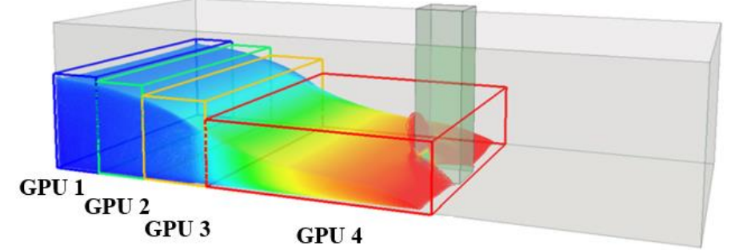
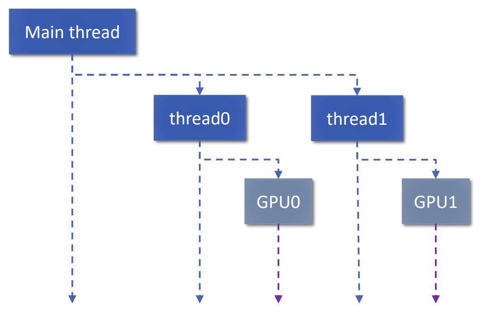
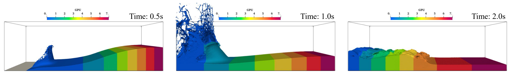

CPU, GPU and Multi-GPU Execution¶
DualSPHysics v6 supports CPU execution with OpenMP, single-GPU execution with CUDA, and a separate Multi-GPU solver. This guide explains executable selection, command-line options, execution requirements and feature compatibility. The numerical features available depend on the selected executable and execution mode.
For the basic preparation, solver and post-processing sequence, see The DualSPHysics Workflow.
Execution modes at a glance¶
| Feature | CPU / OpenMP | Single GPU / CUDA | Multi-GPU |
|---|---|---|---|
| Main parallel work | OpenMP threads on the host CPU | CUDA computation on one NVIDIA GPU | CUDA computation on several GPUs in one workstation or node |
| Host coordination | OpenMP CPU execution | Host code manages one GPU | Workshop implementation: standard C++ threads and CUDA streams |
| Windows executable used here | DualSPHysics6.0CPU_win64.exe |
DualSPHysics6.0_win64.exe |
DualSPHysics6.0MGPU_win64.exe |
| Linux executable used here | DualSPHysics6.0CPU_linux64 |
DualSPHysics6.0_linux64 |
DualSPHysics6.0MGPU_linux64 |
| Selection | -cpu, -ompthreads:N |
-gpu or -gpu:N |
-gpus:N, optionally -gpusid:id0,id1,... |
| Main resource considerations | Host memory and CPU resources available to the process | Device memory, compatible CUDA software and driver | Memory on each device, host resources, data exchange and synchronisation |
| Compatibility | Depends on the selected CPU build | Depends on the selected GPU build | Distinguish mode restrictions from features absent from the MGPU executable; see the compatibility table below |
The standard solver help also documents CPU execution. The dedicated CPU executable provides an explicit CPU path in the examples below. The Windows MGPU executable also supports CPU and single-GPU modes, with the feature limits described below; this does not make the executables interchangeable. The presence of OpenMP among the Multi-GPU build's available features does not mean that OpenMP coordinates its GPUs.
CPU execution with OpenMP¶
OpenMP distributes CPU work among threads within a process. A physical core is a hardware processing core; logical processors are the execution contexts exposed to the operating system, which may include simultaneous multithreading. An OpenMP thread is a software thread. These quantities should not be treated as interchangeable measures of useful parallel performance.
The documented options are:
| Option | Meaning |
|---|---|
-cpu |
Select CPU execution; CPU is the default execution option in the documented interface. |
-ompthreads:N |
Set the number of host threads for CPU execution. |
-ompthreads:0 |
Use the documented default, described as the number of cores of the device. |
The help does not specify whether its default core count denotes physical cores or logical processors, or how process affinity affects that count. Select an explicit positive thread count when a controlled allocation is required, and measure its effect on the actual case. Increasing the thread count does not guarantee a shorter runtime: memory access, scheduling and the work available for parallel execution also matter.
Use a CPU build and its compatible runtime libraries for the operating system. Ensure that the case and its outputs fit in host memory. No universal minimum CPU model or optimal thread count is established here.
Single-GPU execution with CUDA¶
The single-GPU solver performs GPU computation using NVIDIA CUDA. The host CPU still performs management and other work; selecting a GPU does not eliminate CPU or host-memory requirements.
The syntax -gpu[:id] means that -gpu selects GPU execution and that an optional identifier can be supplied, for example -gpu:0. The help does not define the automatic selection rule when the identifier is omitted. Confirm the CUDA devices reported by the actual solver and use an identifier available to that execution environment. Do not infer device identifiers from the order of cards in a system utility or assume that a Multi-GPU identifier list has identical numbering semantics.
The particle data and working arrays must fit the selected device's usable memory. The number of particles alone does not determine the required memory: numerical features and associated arrays also contribute. A CUDA-capable NVIDIA GPU, a compatible driver and the runtime libraries required by the particular build are necessary. The available v6 sources do not establish universal minimum driver, CUDA toolkit or compute-capability versions; use the requirements accompanying the distributed build rather than requirements from an older release.
Choosing one device with -gpu:0 does not distribute a case over several GPUs. Multi-GPU execution uses its separate executable and options.
Multi-GPU execution¶
Single-node architecture and domain decomposition¶
The January 2026 workshop describes a single process using several GPUs within one workstation or computing node. The physical domain is partitioned into subdomains, with each GPU computing the particles assigned to its part. Dynamic load balancing can move the partition boundaries as the workload evolves.

This implementation differs from the earlier MPI-based distributed implementation discussed in the same presentation. It uses shared host execution data within one process rather than separate MPI processes exchanging their own copies. Historical MPI supercomputer results should therefore not be treated as measurements of the present single-node execution method.
The workshop describes a main CPU thread and one CPU thread per GPU. Standard C++ threads and CUDA streams provide host and device coordination. Host synchronisation uses std::mutex and std::atomic; CUDA streams and events support device synchronisation and overlap of computation with asynchronous transfers. Synchronisation may involve the main thread and all GPU threads, the GPU threads, or two particular threads.

The supplied Multi-GPU executable documents a separate execution mode and its configuration interface. The detailed threading account above describes the published workshop architecture; changes to those internals in later builds require corresponding implementation documentation.
Particle exchange, synchronisation and numerical work¶
Neighbour interactions cross subdomain boundaries. A GPU therefore needs neighbouring particle and cell information from adjacent subdomains, including halo data. Particles that move across a partition must migrate with their associated arrays. Rebalancing also redistributes data when a new partition is selected.
These operations introduce work beyond the corresponding single-GPU computation: identifying exchanged particles, updating cell information, transferring arrays, assessing imbalance and synchronising dependent tasks. Asynchronous transfers can overlap useful calculation, but they do not remove all communication or synchronisation costs.
Global operations also require coordination. The workshop identifies a global time-step decision, motions of bodies spanning GPUs, wave-gauge results and couplings such as Chrono and MoorDynPlus. The published design reuses SPH CUDA calculation code while introducing a different neighbour-list and Multi-GPU management path. Shared kernels alone do not establish numerical equivalence between execution modes. Validate the relevant physical quantities, conservation behaviour and numerical tolerances for the intended case.
The workshop describes particle exchange between GPUs. This does not mean that every transfer necessarily uses a direct hardware peer-to-peer route. The current -mgp2p option is disabled by default, and the actual transfer path depends on the build, configuration and device interconnect.
Multi-GPU command-line controls¶
Use DualSPHysics6.0MGPU_win64.exe on Windows or DualSPHysics6.0MGPU_linux64 on Linux. Do not assume that the standard single-GPU executable accepts these options.
| Option | Documented interpretation |
|---|---|
-gpus:N |
Number of GPUs to use; documented default is 0. This is a count, not a device identifier. |
-gpusid:id0,id1,... |
Optional list of selected GPU identifiers. Verify identifiers for the Multi-GPU executable. |
-mgdiv:MODE |
Partition axis: x, y, z, plong for the longest particle axis, or dlong for the longest domain axis. Default: dlong. |
-mgbal:MODE[:weights] |
Balancing mode and optional list of domain weights. Help prints the default as Npf; the documented dynamic fluid-and-floating-particle mode is npf. |
-mgbalrun:LIMIT:FREQUENCY:TMEAN |
Dynamic balancing settings: expected improvement limit from 0–100, assessment frequency in time steps, and averaging interval in time steps. Defaults: 1:100:30. |
-mgp2p:0 / -mgp2p:1 |
Disable or enable peer-to-peer use between GPUs. Default: disabled. |
-svdomainvtk |
Save the domain in VTK form; retained in the supplied four-GPU example. |
Balancing modes are fixed (initial domain size), fixednp (initial particle count), fixednpf (initial fluid and floating particle count), np (dynamic particle count), npf (dynamic fluid and floating particle count), and time (dynamic execution time). Particle-count balancing and execution-time balancing measure different aspects of the workload. The default is not a claim of optimal performance for every case.
The help also contains cell-domain and interaction controls, including -cellfit, -cellrgauto and -cellxrange. Preserve the supplied case configuration unless a documented reason requires changing it; these controls are not additional mandatory settings in the example below.
The available help does not establish precedence or mutual-exclusion behaviour when CPU, single-GPU and Multi-GPU selectors are combined. Each example selects one mode. Do not construct mixed-selector commands by assuming an undocumented precedence rule.
Feature compatibility and development-stage limitations¶
The following table concerns DualSPHysics6.0MGPU_win64.exe, including its CPU and single-GPU modes. It reflects the feature support confirmed by José M. Domínguez Alonso on 2 November 2026.
| Feature | Multi-GPU mode | CPU/single-GPU modes in this executable |
|---|---|---|
All mDBC modes, with or without NoPenetration |
Supported | Supported |
DivCleanKp |
Supported | Supported |
| Periodic boundary conditions | Not supported | Supported |
| Inlet/outlet | Not supported | Supported |
| ChronoFEA | Not supported | Supported |
| Flexible structures | Not included | Not included |
| Advanced Shifting | Not included | Not included |
| Variable Resolution | Not included | Not included |
Not supported denotes a restriction of Multi-GPU mode: the executable reports a Multi-GPU limitation if that feature is requested with several GPUs, but allows it in CPU and single-GPU modes. Not included means the feature is absent from this executable in every mode, and the solver reports that the requested functionality is not included. These limits do not apply automatically to the standard CPU/GPU executables or to DualSPHysics v6 as a whole.
ChronoFEA is distinct from other Project Chrono functionality. The supplied Multi-GPU help lists Project Chrono and MoorDynPlus couplings, and the distributed mooring example below uses two GPUs; neither establishes support or numerical validation for every coupled configuration. Other specialised formulations require their own executable-specific compatibility information.
The Linux MGPU binary exposes CPU, single-GPU and Multi-GPU command-line selectors, but the Windows confirmation above does not establish identical Linux feature support. Use the support information for the particular Linux build before transferring specialised configurations.
The workshop's suggested workstation sizes and test GPU counts are development and measurement context, not a verified current minimum or maximum device count. Likewise, a failure caused by too few detected GPUs does not establish an incompatibility of the physical or boundary formulation.
Windows BAT and Linux shell examples¶
The paths below are relative to examples/main/01_DamBreak in a distribution with bin/windows and bin/linux three directory levels above the case folder. Run commands from that case directory. The solver's first positional argument is the generated case prefix; the second is the output directory. A _Def.xml geometry definition is not a substitute for the initial files produced by GenCase.
These are documented command examples, not benchmark results or a guarantee that a particular local installation is ready to run. Use a v6-compatible case definition, the libraries supplied for the build and a separate working copy. Check existing output directories before launching an example.
Multi-GPU examples supplied with DualSPHysics v6¶
The following Windows BAT scripts use DualSPHysics6.0MGPU_win64.exe. Paths are relative to the package root:
examples/main/01_DamBreak/:wCaseDambreak_win64_2GPU.bat— two GPUs.wCaseDambreak_win64_4GPU.bat— four GPUs.
examples/main/18_Bathymetry/:wCaseBathymetryWalls_win64_2GPU.bat— two GPUs.
examples/mdbc/04_Dambreak/:wCaseDamBreak3D_mDBC_win64_2GPU.bat— two GPUs, mDBC-M22 selected by-mdbc22.wCaseDamBreak3D_NS_mDBC_win64_2GPU.bat— two GPUs, mDBC-NS withNoPenetration=Yset inCaseDamBreak3D_NS_Def.xml.
examples/mdbc/07_WavesCylinder/:wCaseWavesFrCylinder_mDBC_win64_2GPU.bat— two GPUs, mDBC-M22 selected by-mdbc22.wCaseWavesFrCylinder_mDBC_NS_win64_2GPU.bat— two GPUs, mDBC-NS selected by-mdbc_ns.
examples/moordynplus/03_WavesMoorings3D/:wCaseMoorings3D_win64_2GPU.bat— two GPUs with MoorDynPlus.
These scripts demonstrate supplied configurations, not numerical validation or universal performance. Keep their case-specific options: the four-GPU example below includes its own particle-spacing override. The Linux commands below are direct solver invocations; no matching Multi-GPU shell scripts were found in these five example directories.
CPU on Windows¶
For initial files already prepared under CaseDambreak_out/CaseDambreak, this command uses the verified CPU executable name and the documented default thread selection:
"../../../bin/windows/DualSPHysics6.0CPU_win64.exe" -cpu -ompthreads:0 CaseDambreak_out/CaseDambreak CaseDambreak_out
This command is assembled from the supplied executable path and current help syntax; it is not presented as an unmodified CPU BAT file.
One GPU on Windows¶
The supplied wCaseDambreak_win64_GPU.bat uses the standard solver with -gpu. Its expanded solver call is:
"../../../bin/windows/DualSPHysics6.0_win64.exe" -gpu CaseDambreak_out/CaseDambreak CaseDambreak_out
To request identifier 0, where that identifier is available to the solver, use the documented optional device argument:
"../../../bin/windows/DualSPHysics6.0_win64.exe" -gpu:0 CaseDambreak_out/CaseDambreak CaseDambreak_out
CPU and one GPU on Linux¶
The following shell commands use the corresponding distributed Linux binaries and their documented options. They are direct solver invocations, not names of supplied case-specific SH scripts. The initial files must already exist, the binaries must have executable permission, and their runtime libraries must be available. Use one command for the selected mode:
../../../bin/linux/DualSPHysics6.0CPU_linux64 -cpu -ompthreads:0 CaseDambreak_out/CaseDambreak CaseDambreak_out
Four GPUs on Windows¶
The workshop's wCaseDambreak_win64_4GPU.bat has a corresponding supplied example. The following preparation and solver excerpt retains its case name, output suffix, particle spacing, four-GPU count and domain-output option. It omits the script's interactive menu and post-processing, and does not delete existing directories.
set name=CaseDambreak
set dirout=%name%_20M_g4_out
set dirbin=../../../bin/windows
set gencase="%dirbin%/GenCase_win64.exe"
set dualsphysicsmgpu="%dirbin%/DualSPHysics6.0MGPU_win64.exe"
%gencase% %name%_Def %dirout%/%name% -save:all -dp:0.0016
if not "%ERRORLEVEL%" == "0" exit /b %ERRORLEVEL%
%dualsphysicsmgpu% -gpus:4 %dirout%/%name% %dirout% -svdomainvtk
The -dp:0.0016 override is part of this particular example. Selecting a backend does not itself require changing particle spacing. This four-GPU input is therefore not automatically the same numerical problem as the standard GPU example. The _20M_g4_out suffix is the supplied directory name, not an independently verified particle count.
Four GPUs on Linux¶
The Linux Multi-GPU binary contains the same documented -gpus interface. For the already prepared four-GPU case prefix, the corresponding direct solver command is:
../../../bin/linux/DualSPHysics6.0MGPU_linux64 -gpus:4 CaseDambreak_20M_g4_out/CaseDambreak CaseDambreak_20M_g4_out -svdomainvtk
Four usable GPUs must be available to that execution environment. This is a translation of the verified solver invocation using the distributed Linux executable, rather than a claim that a matching four-GPU SH script is supplied. Successful execution depends on case compatibility and the runtime environment.
Hardware and measured performance¶
Resources and communication¶
For CPU execution, provide sufficient host memory and compatible OpenMP runtime libraries. GPU execution additionally requires compatible NVIDIA CUDA devices, drivers and the libraries required by the solver build. Multi-GPU execution requires enough usable devices for the requested count and sufficient memory on each device for its assigned particles, neighbouring data and working arrays. Memory across several cards should not be treated as a single unrestricted allocation.
Interconnect bandwidth, transfer overlap, domain shape and load imbalance affect Multi-GPU performance. Peer-to-peer capability must be checked for the actual device topology. NVLink is not established as a universal requirement: the workshop measurements used PCIe-connected L40S GPUs without NVLink. This observation does not guarantee that every PCIe arrangement performs similarly.
Workshop scaling measurements¶
The following results belong to the January 2026 workshop implementation. The hardware comprised two AMD EPYC 7282 CPUs at 2.8 GHz, listed with 16 cores, and eight NVIDIA L40S GPUs, each with 48 GB GDDR6 ECC, 864 GB/s memory bandwidth and a PCIe 4.0 ×16 interface, without NVLink. The L40S specifications quoted in the presentation include Ada Lovelace, 18,176 CUDA cores, 142 multiprocessors and 91.6 TFLOPS FP32. These are the measurement platform's specifications, not minimum v6 requirements.
The dam-break tests covered 4 million to 256 million particles. Four formulations were compared:
| Test | Time integration | Viscosity | DDT | Boundaries | Floating bodies |
|---|---|---|---|---|---|
| Basic | Verlet | Artificial | None | DBC | None |
| Advanced | Symplectic | Laminar + SPS | Fourtakas Full | mDBC no-slip + no penetration | None |
| Advanced + 1 body | Symplectic | Laminar + SPS | Fourtakas Full | mDBC no-slip + no penetration | One large body |
| Advanced + 8 bodies | Symplectic | Laminar + SPS | Fourtakas Full | mDBC no-slip + no penetration | Eight bodies |
Weak scaling increases the total problem size with the GPU count while keeping the nominal particles per GPU fixed. The presentation reports these weak efficiencies, with the single-GPU baseline equal to 100% in each column:
| Test | GPUs | 4M/GPU | 8M/GPU | 16M/GPU | 32M/GPU |
|---|---|---|---|---|---|
| Basic | 2 | 96.0% | 99.1% | 100.6% | 103.3% |
| Basic | 4 | 88.9% | 94.8% | 97.9% | 101.3% |
| Basic | 8 | 75.8% | 86.3% | 92.7% | 97.4% |
| Advanced | 2 | 98.6% | 100.8% | 103.5% | 104.6% |
| Advanced | 4 | 93.5% | 98.3% | 101.9% | 102.9% |
| Advanced | 8 | 82.0% | 92.6% | 98.1% | 100.1% |
| Advanced + 1 body | 2 | 97.8% | 99.3% | 102.4% | 103.2% |
| Advanced + 1 body | 4 | 91.9% | 94.8% | 98.3% | 99.7% |
| Advanced + 1 body | 8 | 80.4% | 86.5% | 91.2% | 93.0% |
| Advanced + 8 bodies | 2 | 98.2% | 99.7% | 103.4% | 104.3% |
| Advanced + 8 bodies | 4 | 93.9% | 97.2% | 101.0% | 102.4% |
| Advanced + 8 bodies | 8 | 84.2% | 85.4% | 96.3% | 97.9% |
Values above 100% are reproduced as reported; they are measurements relative to the workshop baseline, not a general speed guarantee. For the 16M-particle single-GPU runs, the presentation gives normalised step costs of 2.19, 6.47, 7.83 and 7.65 ms/(steps×M) for these four tests respectively, where M denotes a million particles. These values are normalised costs, not the unnormalised wall time of a complete 16M-particle step.
Strong scaling keeps the total problem size fixed. For the 32M-particle SPHERIC Benchmark Test Case #2, using Symplectic integration, Laminar + SPS viscosity, Fourtakas Full DDT and mDBC no-slip with no penetration, the presentation reports:
| GPUs | Reported runtime | Reported speedup over one GPU |
|---|---|---|
| 1 | 13.3 h | Baseline |
| 4 | 3.5 h | 3.8× |
| 8 | 2.5 h | 5.3× |
These are elapsed runtimes for the reported benchmark, not per-step timings. Eight GPUs did not provide an eightfold speedup in this test. Weak-scaling efficiency and fixed-problem speedup answer different questions and should not be compared as interchangeable metrics.

Selecting and checking an execution mode¶
Choose an executable that supports the numerical features used by the case. CPU execution provides a route when an appropriate CPU build and sufficient host resources are available. Single-GPU execution requires one compatible device with enough memory. Multi-GPU execution can distribute a larger workload across supported devices, but introduces exchange and synchronisation costs and requires its own compatibility checks.
Keep the physical case, particle spacing, numerical methods and requested outputs controlled when comparing backends. Record the solver version, CPU thread count or device identifiers, GPU count, memory use and elapsed time. Separate case generation and post-processing time from solver time when assessing a solver measurement. Compare scientifically relevant outputs with appropriate tolerances; neither the reuse of CUDA kernels nor a reproducibility option proves bitwise agreement between different backends.
Use the compatibility table for the supplied Windows MGPU executable, and the help and release documentation for the actual build when selecting a mode. Check both whether a feature is included in that executable and whether it is supported in the requested mode. Historical scaling results do not guarantee current performance; confirm specialised combinations not covered by the available support information with the developers.
References¶
- Domínguez, J. M. (2026). Efficient multi-GPU execution of DualSPHysics: design, challenges, and results. 8th DualSPHysics Workshop, Ourense, 28 January 2026. Source of Figures 1–3 and the workshop performance tables.
- DualSPHysics v6: standard and Multi-GPU command-line help distributed with the solver; corresponding Windows and Linux executables.
- GenCase: distributed command-line help and the
main/01_DamBreakWindows GPU and four-GPU example scripts for DualSPHysics v6.